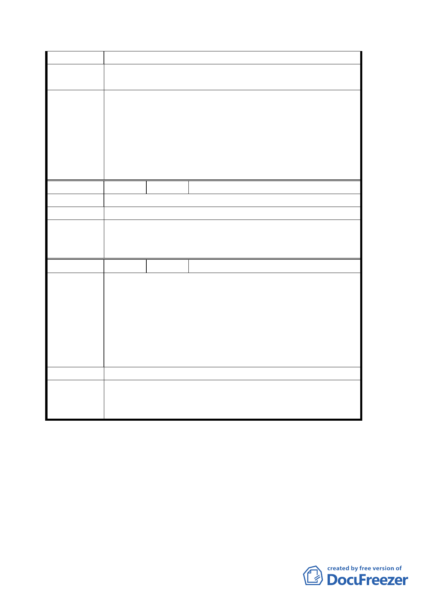

2. 電塔基地周圍已有龜裂。
建議辦法
1.
2.
遷建。
補強。
1. 依台電說明，目前線路地下化係以地區發展情形分期分
區進行；另因架空線下地，需設置連接站轉換，故若下
地包含萬芳高中後門之連接站，則必須另覓地點設置而
委員會決議 目前附近並無適宜地點。所提意見轉請台電公司參考。
2. 電塔基地周圍已有龜裂情形，經台電公司現勘，係萬芳
高中後門舖設之混凝土乾燥後之裂縫，對鐵塔安全無
虞，且該公司鐵塔皆設有人員日常巡視管理維護。
編 號 ３ 陳情人 黃昭男
陳 情 理 由 勿接近民房施工，以免造成傾斜龜裂。
建 議 辦 法 改由空地經過。
依台電說明，該公司對施工安全十分重視，施工期間會加
委員會決議 強管控並邀住戶說明工程概況，避免損鄰事件發生；所提
建議請台電公司參辦。
編
號4
陳情人 國泰建設股份有限公司
上述都市計劃變更案將導致本公司建地及原同一雜項執照
共同開發之毗鄰地區土地均無出入道路，除本公司土地無
法指定建築線，另並造成本公司所有公訓段二小段二一三
陳 情 理 由 之九、二三八、二三八之二、二三九地號四筆土地形成畸
零地，影響整體土地開發利用，且亦使本公司建地可建面
積大幅減少及基地縱深過淺不利使用，影響本公司權益甚
鉅。
建 議 辦 法 建議沿興德路六十二巷現有巷道施作
本計畫案照案通過，請台電再積極與國泰建設股份有限公
委員會決議 司協商合理補償問題，並請發展局協助國泰公司土地建築
線之指定。
討論事項三
案名：變更臺北市大同區大龍段三小段三二三地號土地公車調
度站用地為第三之二種住宅區及第三種住宅區計畫案
說明：
一、本件係市府以九十三年十二月三十日府都規字第０九三二
四